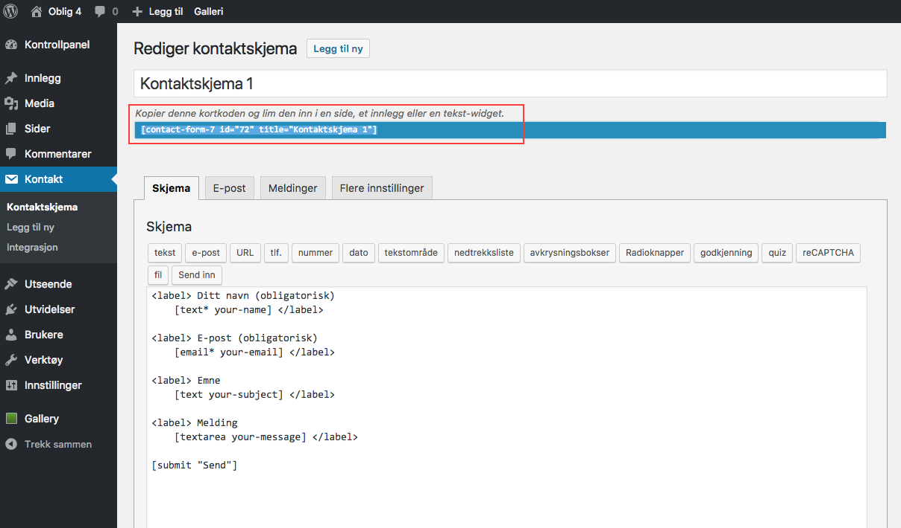
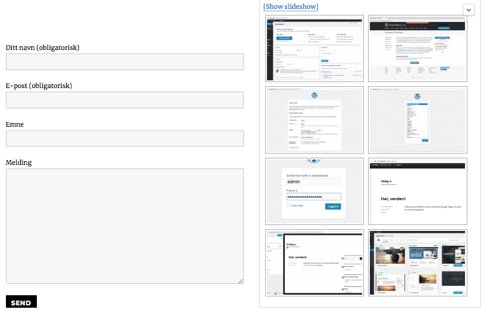
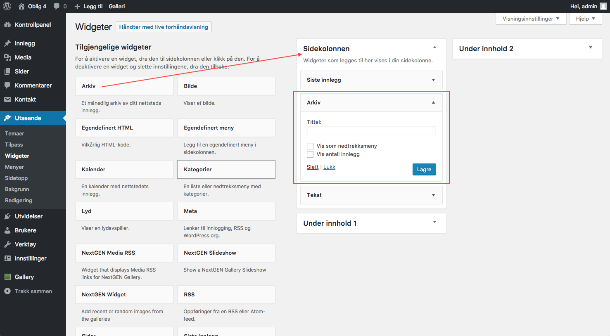
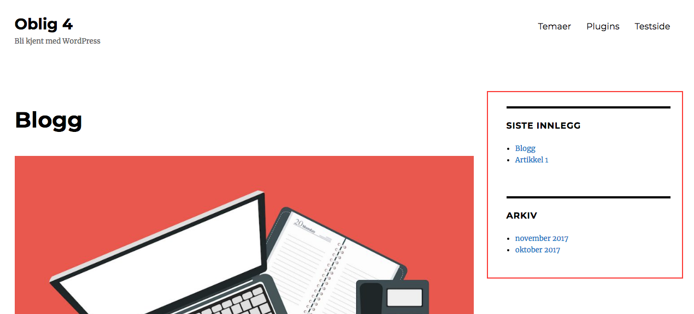

Plugins og widgeter
Det finnes et hav av utvidelser du kan installere i WordPress. Disse installeres gjennom biblioteket i WordPress under fanen "Utvidelser", eller via wordpress.org. Når du har installert en plugin må du aktivere den. Avhengig av plugin vil det komme en ny fane i plattformen. Det følger med dokumentasjon til utvidelsene som gir deg informasjon om hvordan du skal bruke den. Mange krever ingen, eller lite, kunnskap med web. Nedenfor har jeg aktivert NextGEN Gallery som gir mange muligheter når det kommer til bilder. Videre skal vi nå aktivere Contact Form 7 som gir oss muligheten til å få et kontaktskjema på siden vår.

Nå som vi har aktivert kontaktskjemaet kan vi gjøre de endringene vi ønsker. Her kan vi endre hvilke felter vi ønsker oss, meldinger brukerne får ved sendt skjema m.m. Her kan man slette og legge til felter ved å trykke på skjemaknappene. Det er viktig å merke seg måten man legger til skjemaet på siden. Her må man kopiere koden som er uthevet og plassere den i en post på siden.  
Widgeter
Widgeter er funksjoner i WordPress som kan plasseres i såkalte "widget-områder". Du finner dem under Utseende -> Widgeter. De forskjellige temaene har hver sine widgetområder. I temaet "Twenty Seventeen" som jeg bruker her har jeg tre områder hvor jeg kan plassere widgeter. For å legge til en widget drar jeg bare funksjonen til det området jeg ønsker den. Enkelte plugins kan også dukke opp her. 
Her ser vi hvordan det blir seende ut på siden. Widgetene arkiv og "siste innlegg" er her brukt. 